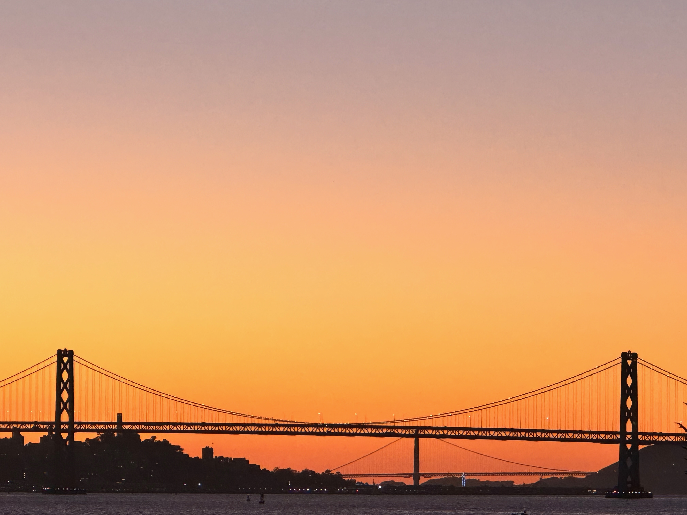
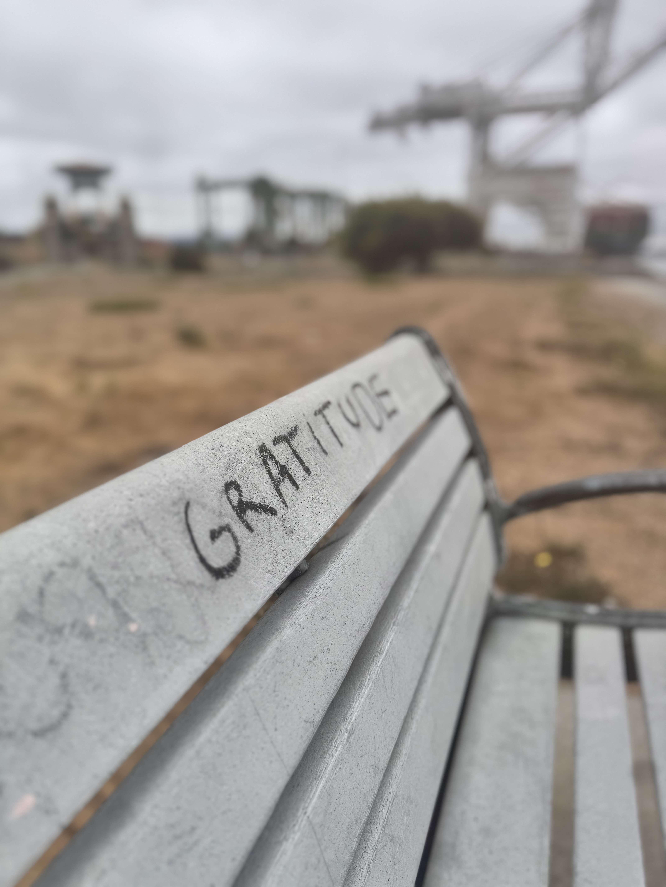
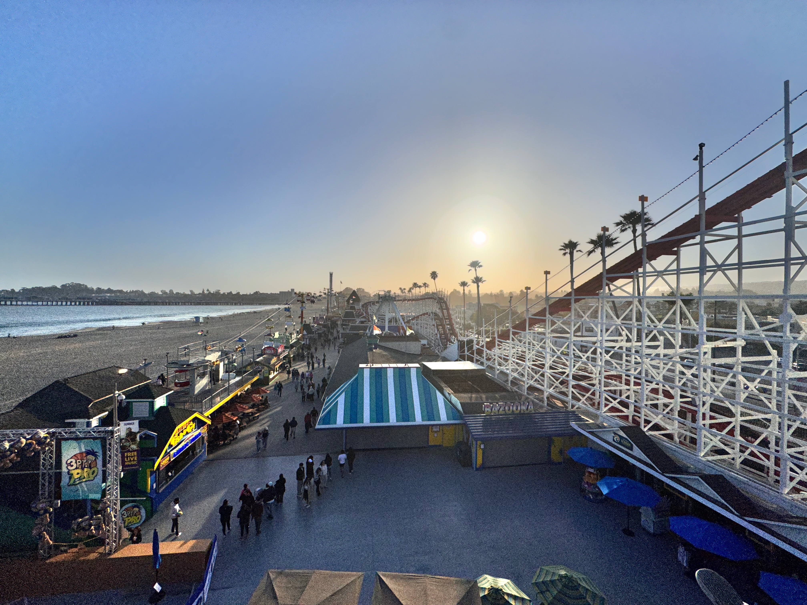
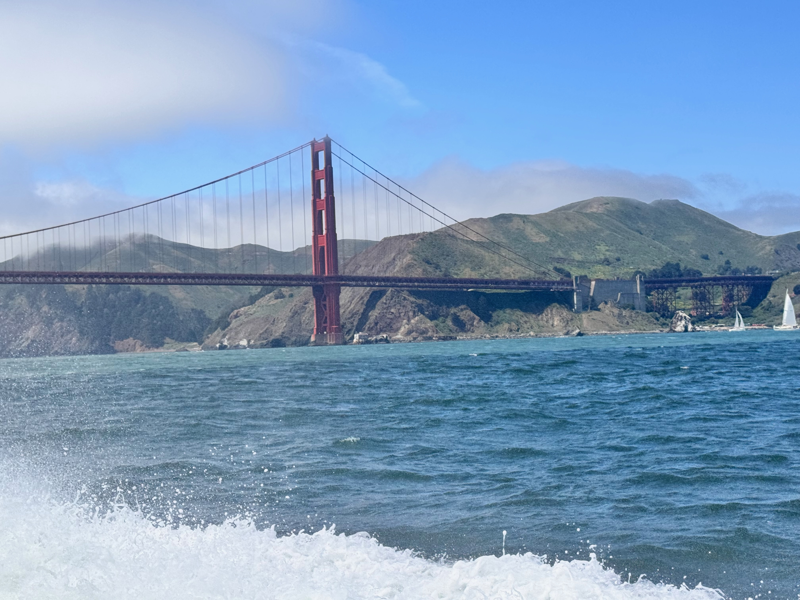
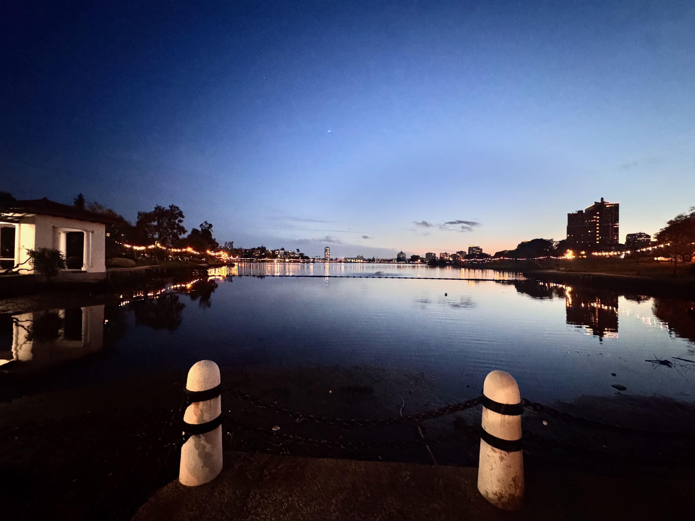
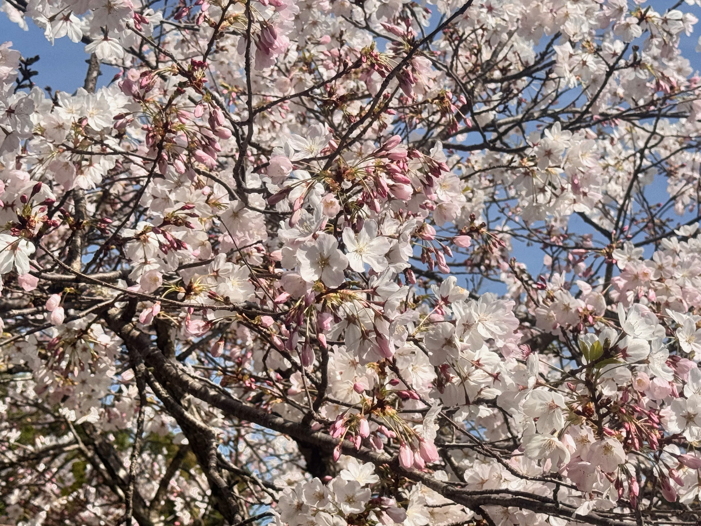
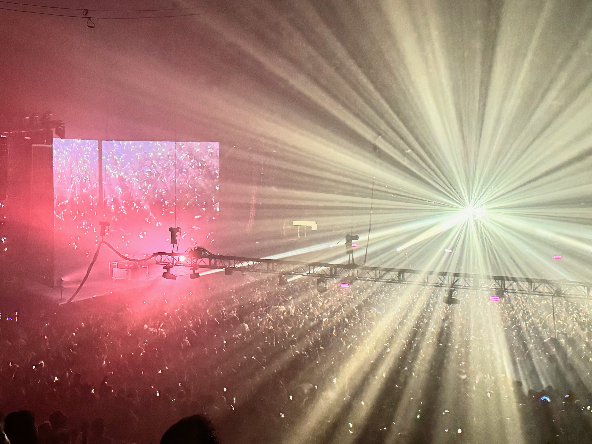
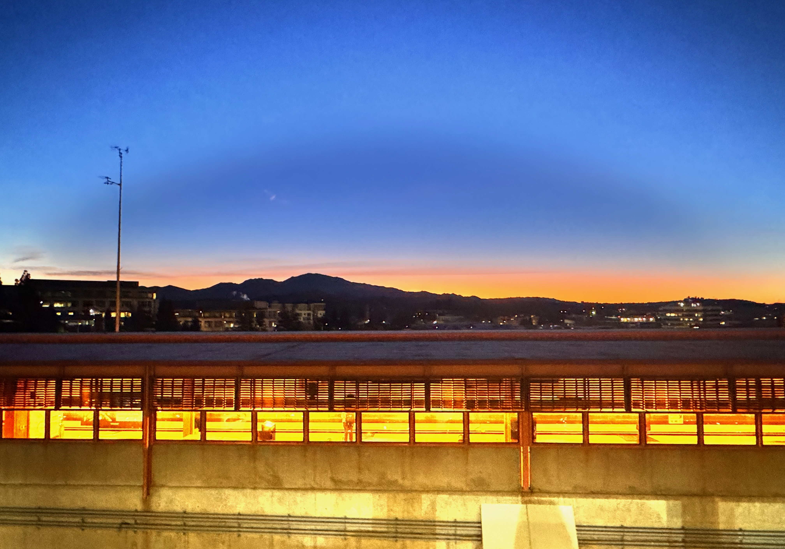
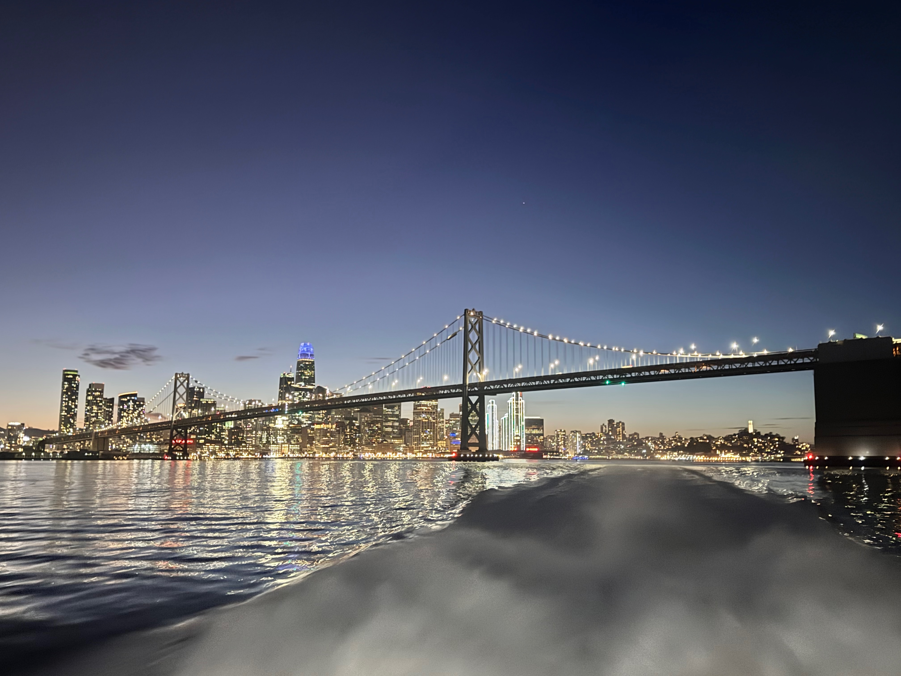

Yosemite ValleyOctober 08, 2025

Bay Bridge and Golden Gate Bridge at sunsetOctober 06, 2025

GRATITUDEAugust 24, 2025Joshua Trees in Joshua Tree National ParkJuly 26, 2025

Santa Cruz Beach BoardwalkMay 04, 2025

Golden Gate BridgeApril 20, 2025

Lake MerrittApril 07, 2025

Cherry blossomsApril 05, 2025Parson JonesFebruary 09, 2025

Jamie xxJanuary 25, 2025

Walnut Creek BART station and Mt. DiabloJanuary 14, 2025

Bay Bridge at nightJanuary 05, 2025